Posted on Sep 20, 2026
Non ho potuto trattenere il bisogno di fare info–dumping dopo il post sul total cost of ownership d’un’automobile (Recensione autocensurata septies, considerazioni sul total cost of ownership), ne è seguito questo post di finanza personale in cui m’aggancio a un’idea di cui ho già discusso (see Finanza personale in Marco’s 2023 Weblog):
se un risparmiatore ha la possibilità, per esempio per eredità, di lasciare titoli a un altro risparmiatore finanziariamente illetterato: un’idea è lasciare Buoni del Tesoro poliennali, BTp, a lunga scadenza con cedola significativa; il motivo è che, con un po’ di fortuna, il risparmiatore illetterato non dovrà fare alcuna scelta riguardo i soldi investiti, limitandosi a incassare le cedole fino a scadenza.
La questione si ripresenta perché, di questi tempi, il titolo
IT0004923998 si può acquistare a un prezzo vicino al valore nominale di
rimborso; il titolo
IT0005534141 si può acquistare a un prezzo inferiore al valore nominale di
rimborso.
Ci sono delle osservazioni da fare, tra le quali:
Nell’ultima sezione di questo post cercheremo di caratterizzare l’obbligazione
IT0004923998 calcolandone il rendimento effettivo: una figura di merito
finanziaria il cui scopo principale è confrontare tra loro diversi titoli
finanziari o, piú in generale, diverse attività finanziarie.
Mi costa fatica accettare che tale figura sia stata denominata rendimento, perché questa parola mi fa pensare al calcolo di quale profitto l’investitore possa mettersi in tasca investendo in un titolo; invece questo rendimento è quasi impossibile da ottenere, nell’economia reale, per un piccolo risparmiatore; il motivo è che il mercato dei titoli finanziari non offre i prodotti che potrebbero realizzarlo. D’altra parte il “vero” profitto è straordinariamente difficile da definire; perciò devo accettare la parola rendimento. La vita è dura.
Riconosco di non essere in grado di spiegare queste idee a chi non ha un livello di competenze matematiche confrontabile al mio; posso farci nulla; di conseguenza non spiegherò tutto tutto e cercherò d’essere breve, immaginando di rivolgermi al me stesso venticinquenne con le sue capacità. Ripeterò alcune spiegazioni già presenti nel post sul total cost of ownership delle automobili, forse migliorandole.
Prima di parlare dell’obbligazione in oggetto: farò un excursus sulle funzioni esponenziali; è un argomento molto studiato perciò scriverò nulla di sorprendente, ma voglio chiarire quali proprietà occorreranno per raggiungere il nostro scopo. Poi ci sarà un altro lungo excursus su come io preferisco pensare a certe idee riguardo i movimenti di capitale; posso comprendere che ciò di cui io ho bisogno per capire non sia ciò di cui altri hanno bisogno: non è per tutti.
Come conseguenza del fatto che la funzione esponenziale è molto studiata: ci sarebbero tantissimissime osservazioni da fare, piccole e grandi; sicuramente in quantità maggiore di quante potrei farne io; cercherò di resistere il piú possibile e ometterle se non sono necessarie.
La bibliografia è l’insieme delle pagine Wikipedia Italia che riguarda la capitalizzazione.
Quest’esposizione è composta in stile discorsivo; non è il mio preferito, specialmente quando si tratta di matematica. Però voglio che questo post sia accessibile anche a chi non pensa come me; perciò: discorriamo!
In questo scritto tutte le grandezze sono da intendersi adimensionali in quanto espresse in “per unità” rispetto a opportune grandezze di riferimento. In particolare: adotteremo una convenzione in cui t = 1 rappresenta il valore per unità d’un anno finanziario di 360 giorni. Se tproprio è un istante di tempo misurato nei valori propri e Trif è il valore di riferimento per la scrittura in per unità, il tempo per unità è definito da:
t = tproprio ÷ Trif
e scriviamo l’esponenziale come:
esp(λ t) = esp(λ tproprio ÷ Trif)
intenderemo la costante λ espressa nei valori per unità; volendo potremmo rappresentarla nei valori propri come λproprio = λ ÷ Trif e scrivere l’esponenziale come:
esp(λ t) = esp(λproprio tproprio)
Osservazione È tradizione, nell’esecuzione d’alcuni calcoli, usare un “anno finanziario” di 360 giorni, con 12 mesi di 30 giorni, immagino perché i calcoli a mano e a mente risultano piú semplici. 360 è multiplo intero di 12 e ciò permette di sfruttare al meglio la fortunata scelta di dividere un anno in 12 mesi; peccato che 30 non sia multiplo intero di 12, probabilmente ciò avrebbe permesso piú giochetti aritmetici.
Al giorno d’oggi eseguiamo i calcoli con sistemi digitali quindi: a chi importa? Purtroppo ci deve importare perché alcuni mezzi d’educazione e informazione utilizzano l’anno finanziario e se noi vogliamo sfruttare i loro dati per controllare i nostri calcoli: dobbiamo conformarci.
In ogni caso, dato che usiamo valori per unità: che differenza fa, davvero, usare l’anno finanziario e non l’anno gregoriano?
Tralasciamo il fatto che non si sappia come rappresentare gli eventi che accadono il 31 d’un qualunque mese (gli eventi del 29 febbraio degl’anni bisestili si possono rappresentare).
Supponiamo d’indicare ogni evento istantaneo d’un anno con precisione “al secondo”, come rapporto:
(numero di secondi dall'inizio dell'anno) ÷ (numero di secondi in un anno)la vera differenza sta nel fatto che lo stesso evento accade in un tempo per unità rappresentato da una frazione diversa per i due calendari; la differenza tra queste frazioni può essere modesta, ma comunque è presente.
Esempio (tempo misurato in secondi) In un minuto ci sono 60 secondi, in un’ora ci sono 60 minuti, in un giorno ci sono 24 ore, nell’anno finanziario ci sono 360 giorni; quindi in un anno finanziario ci sono 60 × 60 × 24 × 360 = 31104000 secondi. Usando questo valore come riferimento per il tempo Trif = 31104000 s: indicato con tsec il tempo nei valori propri e misurato in secondi, il tempo in per unità rispetto a Trif risulta:
t = tsec ÷ Trif = tsec ÷ 31104000un anno finanziario in secondi è tsec = 31104000 s e in per unità risulta t = 1; scriviamo l’esponenziale come:
esp(λ t) = esp(λ tsec ÷ 31104000)
Esempio (tempo misurato in giorni) Nell’anno finanziario ci sono 360 giorni. Usando questo valore come riferimento per il tempo Trif = 360 giorni: indicato con tgiorni il tempo nei valori propri e misurato in giorni, il tempo in per unità rispetto a Trif risulta:
t = tgiorni ÷ Trif = tgiorni ÷ 360un anno finanziario in giorni è tgiorni = 360 giorni e in per unità risulta t = 1; scriviamo l’esponenziale come:
esp(λ t) = esp(λ tgiorni ÷ 360)
Esempio (tempo misurato in trimestri finanziari) Nell’anno finanziario ci sono 4 trimestri finanziari. Usando questo valore come riferimento per il tempo Trif = 4 trimestri: indicato con ttrimestri il tempo nei valori propri e misurato in trimestri finanziari, il tempo in per unità rispetto a Trif risulta:
t = ttrimestri ÷ Trif = ttrimestri ÷ 4un anno finanziario in trimestri è ttrimestri = 4 trimestri e in per unità risulta t = 1; scriviamo l’esponenziale come:
esp(λ t) = esp(λ ttrimestri ÷ 4)
C’interessano funzioni esponenziali del tipo:
U(t) = C eλt = C esp(λ t)
in cui: e ≈ 2.718281828459045 è la base dei logaritmi naturali; l’ampiezza C e la costante λ sono numeri reali; la variabile t rappresenta il tempo.
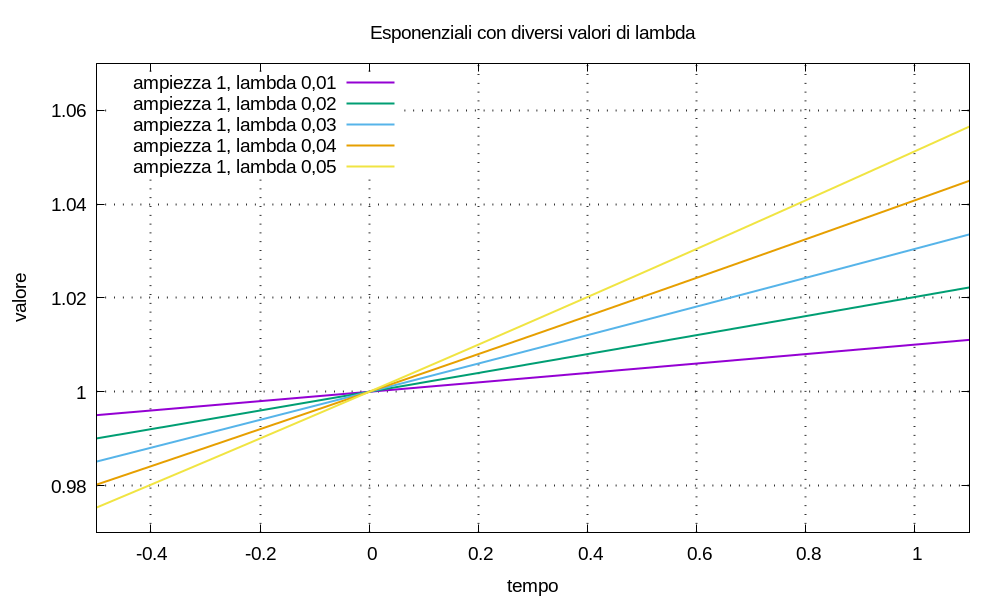
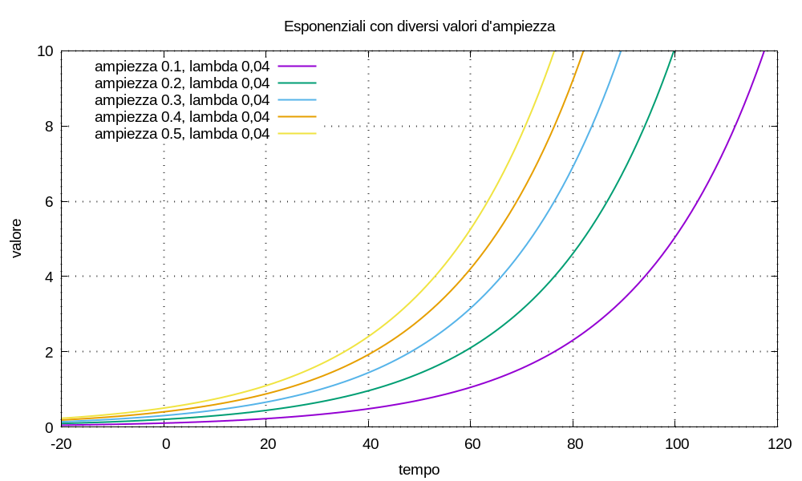
Piú particolarmente, indicato il gradino di Heaviside con u(t), c’interessano le funzioni:
U(t) = u(t - t0) C esp[λ(t - t0)]
in cui l’esponenziale a gradino ha un ritardo nel tempo pari alla costante t0.
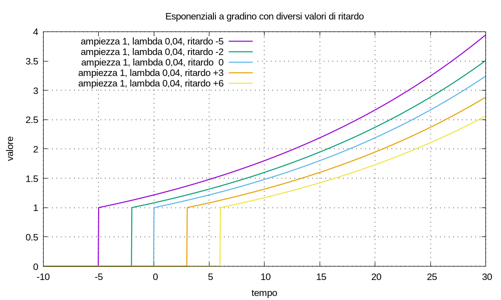
Definiamo un oggetto matematico astratto, che si comporti come un conto deposito: un servizio di custodia di denaro; su cui si possano fare versamenti e prelievi; che remuneri la giacenza con interessi con proporzionalità non lineare rispetto al tempo; che matematicamente sia un sistema lineare tempo–invariante; ideale nel senso: zero costi, zero tassazione.
Siccome alle scuole superiori ho studiato elettrotecnica e questo conto può essere usato per definire una varietà di figure di merito finanziarie: lo denominiamo multimetro finanziario.
Modellizziamo versamenti e prelievi, cioè la movimentazione di capitale, come impulsi di Dirac δ(t) in ingresso a tale sistema, con ampiezza algebrica; scegliamo la convenzione:
non consideriamo ingressi al sistema che non siano impulsi. La movimentazione si può scrivere:
M(t) = Σk=0→K Ck δ(t - tk)
in cui le ampiezze Ck rappresentano l’entità dei movimenti di capitale.
Sappiamo che un sistema lineare tempo–invariante risponde agl’impulsi con funzioni esponenziali e che vale il teorema di sovrapposizione delle cause e degli effetti; definiamo il controvalore del conto deposito, cioè la risposta del sistema multimetro all’ingresso applicato, come la funzione:
U(t) = Σk=0→K Ck u(t - tk) esp[λ (t - tk)]
Il multimetro è caratterizzato dalla costante λ che rappresenta la remunerazione della giacenza; denominiamo tale costante remunerazione del multimetro. In generale, la remunerazione può essere positiva, nulla o negativa; in alcuni casi in cui risulta negativa: la denominiamo decurtazione.
Definiamo la funzione log1p(X) = log(1 + X) in cui il logaritmo è quello naturale; possiamo immaginarci che il multimetro, in quanto dispositivo virtuale, abbia una manopola da ruotare che ci permette di configurare la remunerazione che desideriamo: regolando la manopola su 4 ÷ 100 = 0,04 = 4% la costante è configurata al valore:
λ = log1p(4 ÷ 100) = log1p(0,04) = log1p(4%) ≈ 0,03922071315328133
posto λ = log1p(J), osserviamo che risulta:
esp(λ) = esp(log1p(J)) = esp(log(1 + J)) = 1 + J
definita la funzione espm1(X) = esp(X) - 1, risulta:
espm1(λ) = espm1(log1p(J)) = esp(log(1 + J)) - 1 = J
La regolazione λ = log1p(0) = 0 rende il controvalore una combinazione lineare di gradini:
U(t) = Σk Ck u(t - tk)
in questo caso il multimetro non remunera la giacenza; denominiamo questa configurazione inerte.
Per quanto definito, fissata la remunerazione del multimetro: possiamo caratterizzare ogni movimento di denaro con la coppia (tk; Ck) e organizzare tutti i movimenti nella tupla:
{ (t0; C0), ..., (tk; Ck), ... }
significa che, fissata la remunerazione e scritta la tupla: abbiamo tutto ciò che ci occorre per scrivere sia la movimentazione che il controvalore in forma estesa:
M(t) = Σk Ck δ(t - tk)
U(t) = Σk Ck u(t - tk) esp[λ (t - tk)]
Osservazione La definizione di piú movimenti nello stesso istante è possibile e crea nessun problema; se vogliamo possiamo raccogliere a fattor comune:
C1 u(t - t0) esp[λ (t - t0)] + C2 u(t - t0) esp[λ (t - t0)] == (C1 + C2) u(t - t0) esp[λ (t - t0)]ma non è strettamente necessario. Siccome eseguiremo tutti i calcoli non simbolici con sistemi digitali: possiamo organizzare le tuple nel modo piú comodo per la lettura da parte di esseri umani, senza preoccuparci del minuscolo sovraccarico nell’esecuzione dei conti.
In un sistema economico–finanziario: denominiamo inserzione del multimetro la scelta d’una movimentazione di denaro, in qualche modo significativa, e la sua applicazione al multimetro come ingresso.
Esempio (singolo versamento) Supponiamo che il multimetro abbia inizialmente giacenza zero e sia regolato con λ = log1p(5%); un versamento d’entità 100 all’istante t = 0 è descritto dalla movimentazione:
M(t) = C δ(t) = 100 δ(t)usata come ingresso del multimetro, essa genera la risposta:
U(t) = C u(t) esp(λ t) = 100 u(t) esp(λ t)la tupla che rappresenta questo scenario è:
{ (0; 100) }
Esempio (versamento e liquidazione) Supponiamo che il multimetro abbia inizialmente giacenza zero e sia regolato con λ = log1p(5%); a un versamento d’entità C0 = 100 all’istante t0 = 0, vogliamo far seguire un prelievo all’istante t1 = 1 tale da azzerare il controvalore; cioè all’istante t1 vogliamo la liquidazione totale.
Se ci fosse solo il versamento iniziale: il controvalore all’istante t1 risulterebbe:
U(t1) = C0 u(t1 - t0) esp[λ (t1 - t0)] = 100 × 1 × esp(λ × 1) = 100 × 1,05 = 105si capisce che il prelievo necessario ad azzerare il controvalore dev’essere d’ampiezza C1 = - U(t1) = - 105. Perciò la movimentazione con versamento e prelievo si scrive:
M(t) = 100 δ(t) - 105 δ(t - 1)e il controvalore:
U(t) = 100 u(t) esp(λ t) - 105 u(t - 1) esp[λ (t - 1)]la tupla che rappresenta questo scenario è:
{ (0; 100), (1; -105) }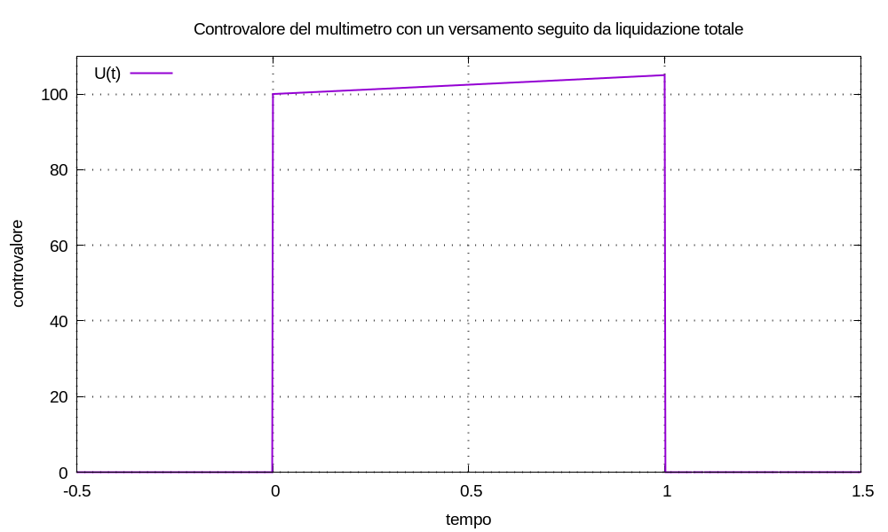
Osservazione (superflua ma non so resistere) Per il controvalore d’un multimetro si può scrivere:
U(t) = U(t) + [- U(t1) + U(t1)] u(t - t1) esp[λ (t - t1)]possiamo interpretare questa scrittura dicendo che: se all’istante t1 liquidiamo totalmente il controvalore (movimento - U(t1)) e subito riversiamo il capitale liquidato nel multimetro (movimento + U(t1)), il controvalore non cambia.
Consideriamo un multimetro regolato a un certo valore di remunerazione λ; con un solo versamento all’istante t0, la movimentazione si scrive:
M(t) = C0 δ(t - t0)
e il controvalore:
U(t) = C0 u(t - t0) esp[λ (t - t0)]
all’istante t1 > t0 il controvalore vale:
U(t1) = C0 u(t1 - t0) esp[λ (t1 - t0)] = C0 esp[λ (t1 - t0)]
Lasciando invariato il valore della remunerazione, consideriamo la movimentazione:
N(t) = U(t1) δ(t - t1)
il controvalore corrispondente risulta:
V(t) = U(t1) u(t - t1) esp[λ (t - t1)]
sostituendo il valore di U(t1) e semplificando:
V(t) = C0 esp[λ (t1 - t0)] u(t - t1) esp[λ (t - t1)]
⇒ V(t) = C0 u(t - t1) esp[λ (t1 - t0 + t - t1)]
⇒ V(t) = C0 u(t - t1) esp[λ (t - t0)]
per ogni istante di tempo t ≥ t1 i gradini di Heaviside sono pari a uno e la differenza tra i due controvalori vale:
V(t) - U(t) = C0 esp[λ (t - t0)] - C0 esp[λ (t - t0)] = 0
Ciò significa che: per t ≥ t1 un impulso in ingresso d’entità C0 all’istante t0 è equivalente a un impulso in ingresso d’entità C0 esp[λ (t1 - t0)] all’istante t1. Quindi se c’interessano solo i valori di controvalore per t ≥ t1 possiamo spostare a piacere l’istante dell’impulso, purché sia prima di t1 e adeguiamo la sua ampiezza.
Denominiamo quest’operazione di spostamento e adeguamento degl’impulsi attualizzazione equivalente agl’effetti futuri.
Notiamo la simmetria: cosí come V(t) è equivalente a U(t), viceversa U(t) è equivalente a V(t); cioè è possibile attualizzare gl’impulsi in ingresso sia verso il futuro che verso il passato.
Osserviamo che, essendo il multimetro un sistema lineare per cui vale la sovrapposizione delle cause e degli effetti: quando la movimentazione è una combinazione lineare d’impulsi, possiamo attualizzare tutti gl’impulsi all’istante che desideriamo, ottenendo un controvalore equivalente nel futuro. Definito l’indice k variabile tra 0 e un limite superiore K, sia la movimentazione:
M(t) = Σk Ck δ(t - tk)
il controvalore risulta:
U(t) = Σk Ck u(t - tk) esp[λ (t - tk)]
attualizziamo tutti gl’impulsi all’istante ta, risulta:
N(t) = δ(t - ta) Σk Ck esp[λ (ta - tk)]
il controvalore corrispondente risulta:
V(t) = u(t - ta) esp[λ (t - ta)] Σk Ck esp[λ (ta - tk)]
e per ogni t ≥ max(tK, ta) risulta V(t) = U(t).
Esempio (attualizzazione) Configurato un multimetro con remunerazione λ = log1p(0,05), stabiliamo la seguente tupla d’ingressi:
{ (t0; C0), (t1; C1), (t2; C2), (t3; C3), (t4; C4) }con valori:
{ (0; 1), (1; 0,3), (2; 0,4), (3; -0,5), (4; 0,7) }definito l’indice k tra 0 e 4, la corrispondente movimentazione si scrive:
M(t) = Σk Ck δ(t - tk)attualizziamo tutti gl’impulsi all’istante ta = t0 = 0, in modo che risulti un solo impulso:
N(t) = δ(t - ta) C' = δ(t - ta) Σk Ck esp[λ (ta - tk)]e il capitale attualizzato risulta:
C' = Σk Ck esp[λ (ta - tk)] ≈ 1,7924990101860847Il controvalore attualizzato risultante è uguale a quello proprio per t ≥ t4.
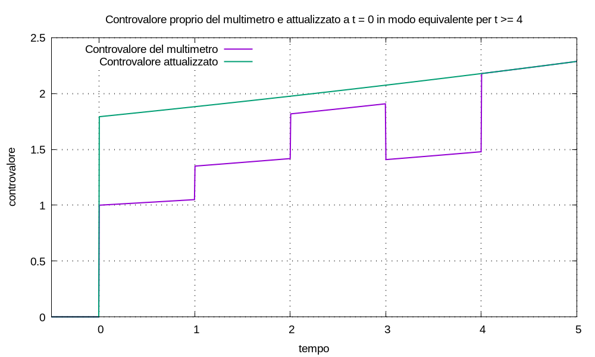
Anche senza discussione: possiamo capire la seguente figura.
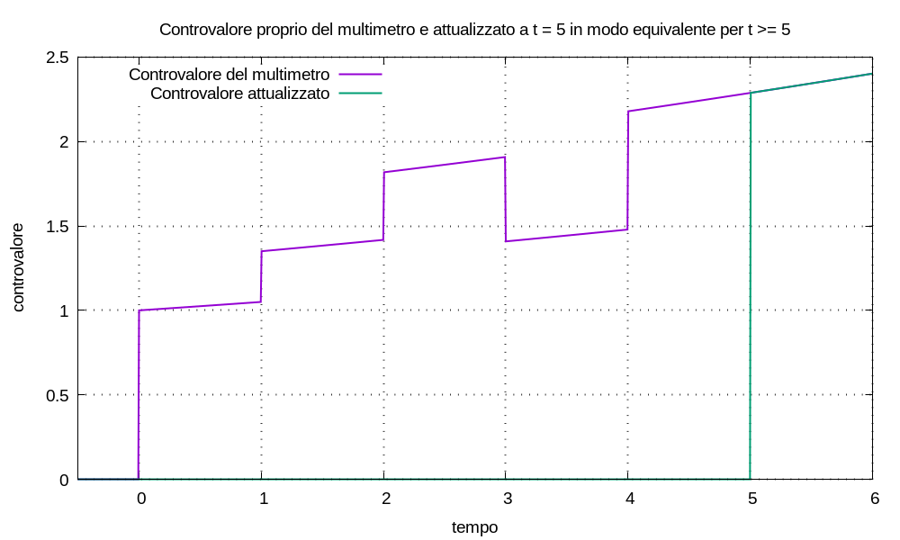
Con un solo versamento all’istante t0 = 0, il controvalore del multimetro è:
U(t) = C u(t) esp(λ t)
se k è un numero naturale, all’istante t = k ≥ 0 risulta:
U(k) = C u(k) esp(λ k) = C esp(λ k) = C esp(λ)k
Configuriamo il multimetro con λ = log1p(J) e denominiamo tasso d’interesse composto percentuale, rispetto al tempo unitario, la costante J, che esprimiamo in percentuale; allora, ricordando che:
esp(λ) = esp[log1p(J)] = esp[log(1 + J)] = 1 + J
risulta:
U(k) = C esp(λ)k = C (1 + J)k
possiamo calcolare J a partire da λ:
λ = log1p(J) = log(1 + J)
⇒ esp(λ) = 1 + J
⇒ J = esp(λ) - 1 = espm1(λ)
Sappiamo che esistono titoli obbligazionari che pagano cedole periodicamente, per esempio una volta l’anno. Vogliamo determinare l’entità delle cedole che, pagate periodicamente, simulino l’incremento di controvalore d’un multimetro, come mostrato dalla figura.
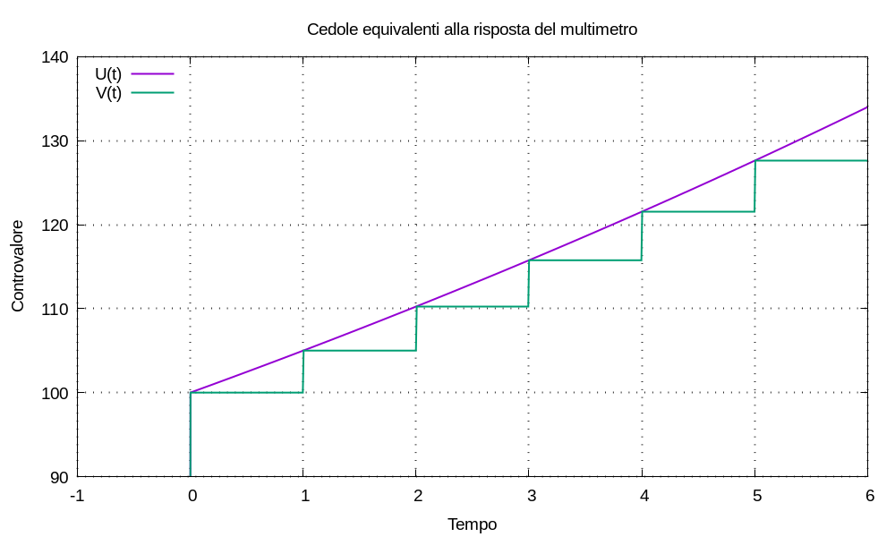
Configuriamo la remunerazione d’un multimetro al valore λ = log1p(J); con un solo versamento all’istante t0 = 0, il controvalore del multimetro è:
U(t) = C u(t) esp(λ t)
se k è un numero naturale, all’istante t = k ≥ 0 il gradino di Heaviside è pari a uno e risulta:
U(k) = C esp(λ k) = C esp(λ k)
all’istante k + 1 risulta:
U(k + 1) = C esp[λ (k + 1)] = C esp(λ k) esp(λ)
l’incremento di controvalore si può scrivere:
U(k + 1) - U(k) = C esp(λ k) esp(λ) - C esp(λ k) = C esp(λ k) [esp(λ) - 1]
posto espm1(λ) = esp(λ) - 1 risulta:
U(k + 1) - U(k) = C espm1(λ) esp(λk)
Definiamo una nuova funzione, di tipo controvalore, estendendo la sommatoria agl’indici h ≥ 1:
V(t) = U(0) u(t) + Σh [U(h) - U(h-1)] u(t - h)
possiamo capire che V(k) = U(k) per ogni k ≥ 0, per esempio:
V(2) = U(0) u(2) + [U(1) - U(0)] u(2 - 1) + [U(2) - U(1)] u(2 - 2)
tutti i gradini di Heaviside sono pari a 1 e semplificando risulta:
V(2) = U(0) + [U(1) - U(0)] + [U(2) - U(1)] = U(2)
la funzione V(t) si può scrivere:
V(t) = U(0) u(t) + Σh C espm1(λ) esp[λ(h-1)] u(t - h)
ricordando che espm1(λ) = J e esp(λ) = 1 + J, se all’istante h ≥ 1 aggiungiamo una cedola pari a:
C espm1(λ) esp(λ)(h-1) = C J (1 + J)(h-1)
teniamo il passo con l’incremento esponenziale.
La risposta del multimetro a un singolo versamento all’istante t0 si scrive:
U(t) = C0 u(t - t0) esp[λ (t - t0)]
supponiamo di conoscere la tupla di valori, con t0 < t1:
{ (t0; C0), (t1; -U(t1)) }
possiamo calcolare la remunerazione:
U(t1) = U(t0) u(t1 - t0) esp[λ (t1 - t0)] = U(t0) esp[λ (t1 - t0)]
⇒ U(t1) ÷ U(t0) = esp[λ (t1 - t0)]
⇒ log[U(t1) ÷ U(t0)] = λ (t1 - t0)
⇒ λ = log[U(t1) ÷ U(t0)] ÷ (t1 - t0)
⇒ λ = [log U(t1) - log U(t0)] ÷ (t1 - t0)
Ora immaginiamo un titolo finanziario pincopalla, di controvalore V(t), di cui sia nota la tupla di valori:
{ (t0; V(t0)), (t1; V(t1)) }
per esempio, se pincopalla è quotato in borsa: i prezzi di chiusura d’ogni giornata di contrattazione sono di dominio pubblico. Utilizziamo il multimetro applicandogli la movimentazione:
M(t) = V(t0) δ(t - t0)
generando la risposta del multimetro:
U(t) = V(t0) u(t - t0) esp[λ (t - t0)]
risulta U(t0) = V(t0); aggiungiamo la condizione U(t1) = V(t1).
Osservazione Pur non essendo strettamente necessario, se fa comodo per organizzare le idee: è possibile considerare la condizione aggiuntiva U(t1) = V(t1) come parte della movimentazione, aggiungendo un movimento di liquidazione totale:
M(t) = U(t0) δ(t - t0) - U(t1) δ(t - t1) = V(t0) δ(t - t0) - V(t1) δ(t - t1)
Calcoliamo la remunerazione del multimetro e consideriamola anche come remunerazione di pincopalla:
λpincopalla = [log V(t1) - log V(t0)] ÷ (t1 - t0)
facciamo un esempio numerico:
λpincopalla = (log 234,56 - log 123,45) ÷ (20 - 0) ≈ 0,0320937601453549
cioè il multimetro misura un tasso d’interesse composto percentuale annuale:
Jpincopalla = expm1(λpincopalla) ≈ 3,26%
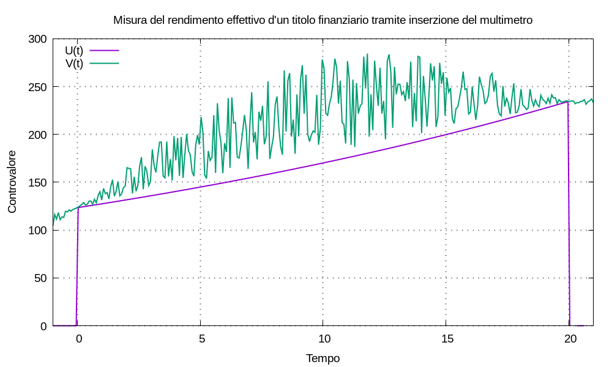
Ripetiamo il ragionamento per il titolo pizzaefichi, di controvalore W(t), di cui sia nota la tupla di valori:
{ (t0; W(t0)), (t1; W(t1)) }
definiamo la movimentazione:
M(t) = W(t0) δ(t - t0) - W(t1) δ(t - t1)
e applichiamola a un multimetro per calcolare la remunerazione di pizzaefichi:
λpizzaefichi = [log W(t1) - log W(t0)] ÷ (t1 - t0)
facciamo un esempio numerico:
λpizzaefichi = (log 345,67 - log 234,56) ÷ (20 - 0) ≈ 0,019388657200908942
cioè il multimetro misura un tasso d’interesse composto percentuale annuale:
Jpizzaefichi = expm1(λpizzaefichi) ≈ 1.96%
Abbiamo usato il multimetro per calcolare la figura di merito remunerazione dei due titoli relativa a uno specifico intervallo di tempo; possiamo denominare la figura di merito tasso d’interesse composto percentuale annuale, calcolata come descritto, come rendimento effettivo dei titoli stessi, indicandolo con η = J. Possiamo quindi confrontare fra loro i titoli finanziari in termini di rendimento effettivo (qualunque cosa ciò significhi): per gli esempi risulta ηpincopalla > ηpizzefichi.
Uno dei possibili utilizzi del rendimento effettivo è l’analisi d’un portafoglio finanziario variegato sostituendo ogni titolo in portafoglio con l’equivalente multimetro impostato con remunerazione λ = log1p(η). In questo modo: il controvalore d’ogni titolo è una funzione esponenziale, il che rende piú facile una varietà di calcoli.
Se oggi possediamo 100,00 eur possiamo spenderli subito per acquistare merce in vendita al prezzo di 100,00 eur; invece mettiamoli sotto il materasso. Se l’indice d’inflazione tra oggi e un anno nel futuro vale 3%: tra un anno con 100,00 eur potremo acquistare merce che oggi acquisteremmo con:
100 ÷ (1 + 3%) = 100 ÷ (1 + 3 ÷ 100) = 100 ÷ 1,03 ≈ 97,09 eur
l’inflazione fa perdere potere d’acquisto al denaro. Possiamo affermare che:
Se al tempo t0 siamo in possesso d’un capitale d’entità C0 definiamo la movimentazione:
M(t) = C0 δ(t - t0)
applichiamola al multimetro generando il controvalore:
U(t) = C0 u(t - t0) esp[λ (t - t0)]
Per ipotesi: prevediamo che nei prossimi anni, fino all’infinito, l’indice d’inflazione percentuale annuo sia 3%; tradizionalmente s’esprime l’inflazione con un valore positivo, ma quando si usa questo valore per configurare un multimetro esso dev’essere negativo, cioè è una decurtazione, Jinflazione = - 3%:
λinflazione = log1p(Jinflazione) = log1p(- 3%) ≈ -0,030459207484708574
Il controvalore U(t) rappresenta il valore futuro del capitale C0 al tempo t svalutato dall’inflazione; tale valore è spesso chiamato valore reale al tempo t.
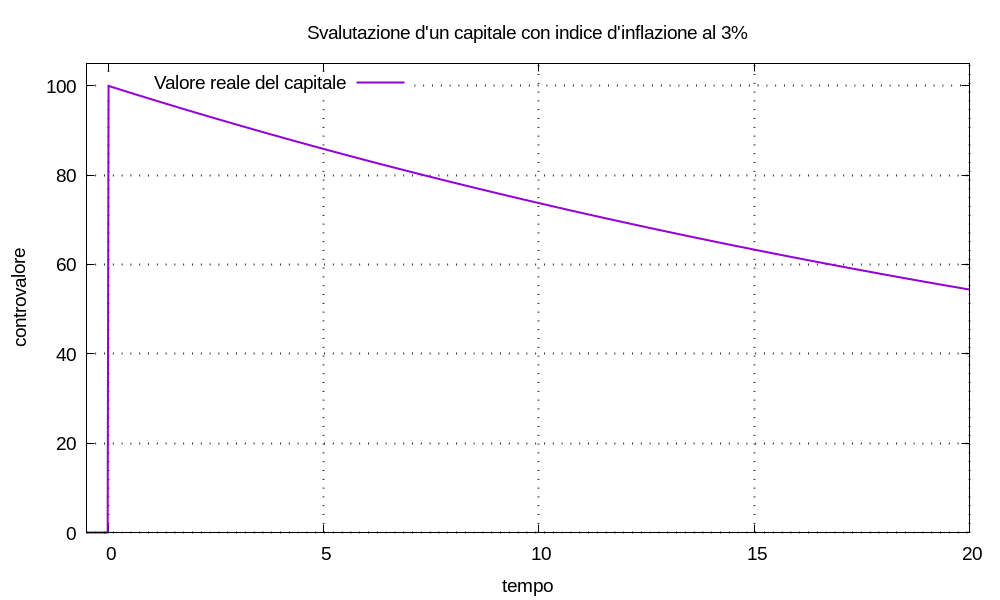
Immaginiamo d’investire un capitale C0 al tempo t0 in un titolo finanziario; vogliamo simulare il controvalore del titolo per il futuro, considerando la svalutazione dovuta all’inflazione. La remunerazione del titolo è:
λtitolo = log1p(ηtitolo)
essendo un valore futuro non predicibile: stimiamo l’inflazione media per il periodo di studio a un certo valore:
λinflazione = log1p(Jinflazione)
simuliamo il controvalore del titolo configurando la remunerazione del multimetro al valore λtitolo + λinflazione; il controvalore, in valori reali, risulta:
Ureale(t) = C0 u(t - t0) esp[(λtitolo + λinflazione) (t - t0)] = U(t) esp[λinflazione (t - t0)]
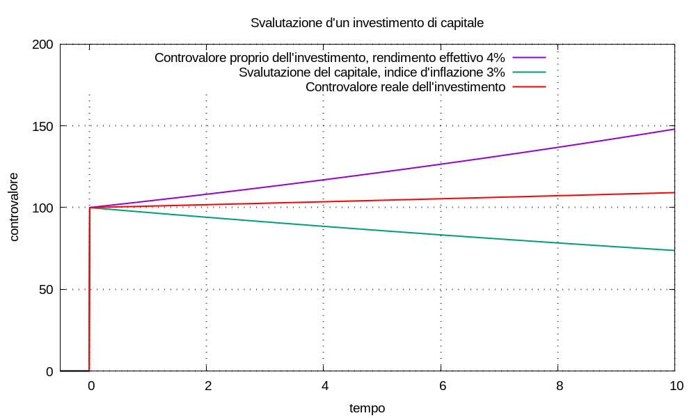
Nell’economia reale: il possesso e la gestione d’un portafoglio finanziario costano denaro all’investitore; spesso è possibile stimare i vari costi d’esercizio in termini d’un tasso di costo composto percentuale, per esempio assumiamo Jcosto = - 1,23%.
In modo simile a quanto fatto per la stima dell’inflazione: immaginiamo d’investire un capitale C0 al tempo t0 in un titolo finanziario; vogliamo simulare il controvalore del titolo nel futuro, considerando la svalutazione dovuta ai costi d’esercizio.
La remunerazione del titolo vale:
λtitolo = log1p(ηtitolo)
la decurtazione causa costi vale:
λcosto = log1p(Jcosto)
simuliamo il controvalore del titolo configurando la remunerazione del multimetro al valore λtitolo + λcosto; il controvalore del multimetro, al netto dei costi, risulta:
Unetto costi(t) = C0 u(t - t0) esp[(λtitolo + λcosto) (t - t0)] = U(t) esp[λcosto (t - t0)]
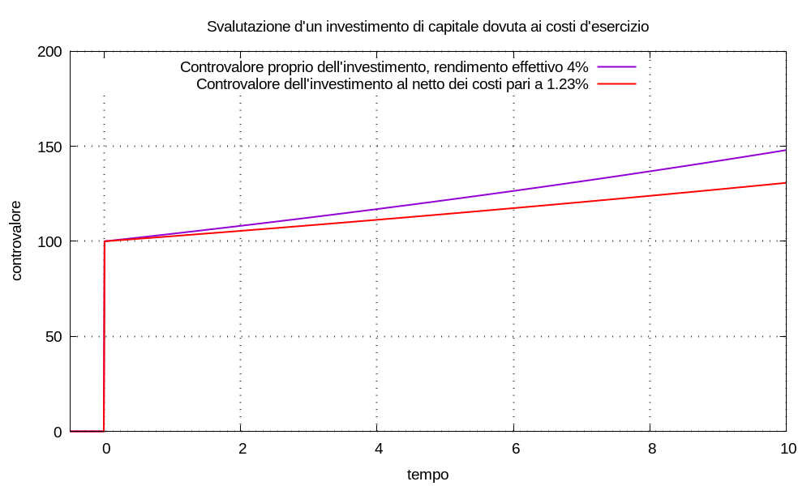
Reinterpretiamo questo risultato in termini analoghi: un risparmiatore possegga un patrimonio C0 al tempo t0 investito in un portafoglio titoli che, al netto di tutto, abbia rendimento effettivo ηpatrimonio corrispondente alla remunerazione:
λpatrimonio = log1p(ηpatrimonio)
il risparmiatore non risparmi quantità di denaro al tasso composto percentuale annuo Jnon risparmio < 0 corrispondente alla decurtazione:
λnon risparmio = log1p(Jnon risparmio)
simuliamo la svalutazione del patrimonio, dovuta al non–risparmio, configurando il multimetro alla remunerazione λpatrimonio + λnon risparmio. Possiamo capire quanto sia importante risparmiare.
La tassazione dei redditi finanziari non si modellizza con un tasso annuale composto; infatti l’evento “pagamento delle tasse” avviene solo quando:
Il calcolo delle tasse può essere estremamente complicato; qui vogliamo soltanto evidenziare come rappresentarlo come componente della movimentazione di denaro applicata a un multimetro, quando il multimetro è usato per simulare l’investimento in titoli finanziari.
In questa sezione vediamo un metodo semplice per definire il rendimento effettivo al netto delle tasse; non è sempre applicabile. Un altro metodo è esposto nella sezione sull’inserzione a ponte.
Nel seguito: con “lordo” s’intende al lordo delle tasse; con “netto” s’intende al netto delle tasse.
Immaginiamo di poter definire una funzione matematica tax(t, Ulordo) che esegua il calcolo complicatissimo e fornisca il valore di tasse da pagare se dovessimo liquidare il controvalore Ulordo(t) al tempo t.
Osservazione Le tasse sul reddito finanziario si pagano solo quando tale reddito è positivo, cioè è un profitto; se il reddito è negativo, cioè è una perdita, il calcolo della funzione tax(t, Ulordo) deve risultare pari a zero.
Sappiamo che il controvalore Ulordo(t) al tempo t rappresenta, esso stesso, il valore di liquidazione all’istante t; cioè un movimento:
- Ulordo(t1) δ(t - t1)
liquiderebbe il conto all’istante t1. Siccome la funzione tax(t, Ulordo) calcola l’entità delle tasse da pagare al momento della liquidazione: possiamo comprendere la definizione del controvalore al netto delle tasse come:
Unetto(t) = Ulordo(t) - tax(t, Ulordo)
se vale il seguente modello matematico:
Ulordo(t) = C0 u(t - t0) esp[λlordo (t - t0)]
che permette la definizione del rendimento effettivo lordo come:
ηlordo = expm1(λlordo)
ci proponiamo di costruire un ragionamento che permetta la definizione del rendimento effettivo netto come:
ηnetto = expm1(λnetto) = expm1(λlordo + λtax)
il cui la grandezza λtax è una decurtazione e dev’essere calcolata a partire dalla funzione tax(t, Ulordo); di conseguenza sia λtax, che λnetto, che ηnetto sono funzione del tempo, del controvalore e delle regole di calcolo delle tasse sui redditi.
Il risultato che vogliamo ottenere ha la forma:
Unetto(t) = C0 u(t - t0) esp[λnetto (t - t0)]
⇒ Unetto(t) = C0 u(t - t0) esp[(λlordo + λtax) (t - t0)]
⇒ Unetto(t) = Ulordo(t) esp[λtax (t - t0)]
vogliamo che moltiplicare il controvalore lordo per esp[λtax (t - t0)] abbia lo stesso effetto della sottrazione:
Unetto(t) = Ulordo(t) - tax(t, Ulordo)
possiamo scrivere la differenza tra lordo e netto come:
tax(t, Ulordo) = Ulordo(t) - Unetto(t)
e anche come:
Ulordo(t) - Unetto(t) = Ulordo(t) - Ulordo(t) esp[λtax (t - t0)]
elaborando quest’ultima:
⇒ Ulordo(t) - Unetto(t) = Ulordo(t) { 1 - esp[λtax (t - t0)] }
⇒ tax(t, Ulordo) ÷ Ulordo(t) = 1 - esp[λtax (t - t0)]
⇒ log[ 1 - tax(t, Ulordo) ÷ Ulordo(t) ] = λtax (t - t0)
in definitiva, per t > t0:
λtax(t, Ulordo) = log1p[ - tax(t, Ulordo) ÷ Ulordo(t) ] ÷ (t - t0)
Se abbiamo a disposizione la funzione tax(t, Ulordo) e c’interessa calcolare il controvalore netto abbiamo due possibilità:
Unetto(t) = Ulordo(t) - tax(t, Ulordo)
Unetto = C0 u(t - t0) esp[(λlordo + λtax) (t - t0)]
Esempio (calcolo del rendimento effettivo netto) Usiamo un multimetro per simulare il controvalore d’un titolo finanziario secondo i seguenti dati:
- il rendimento effettivo lordo sia ηlordo = 5%;
- all’istante t0 = 0 investimento di C0 = 100;
- all’istante t1 = 10 liquidazione totale di Ulordo(t1);
- la funzione di calcolo delle tasse sia:
tax(t, Ulordo) = 0,26 [Ulordo(t) - C0] u(Ulordo(t) - C0)in cui: Ulordo(t) - C0 è il reddito finanziario; il gradino di Heaviside annulla il risultato nei casi in cui il reddito finanziario sia una perdita.
Configuriamo un multimetro con λlordo = log1p(ηlordo); usando l’equazioni ricavate, la decurtazione causa tasse risulta:
λtax ≈ -0,010578566610969835la remunerazione netta risulta:
λnetto = λlordo + λtax = 0,038211597558462214e il rendimento effettivo netto risulta:
ηnetto = expm1(λnetto) ≈ 3,89%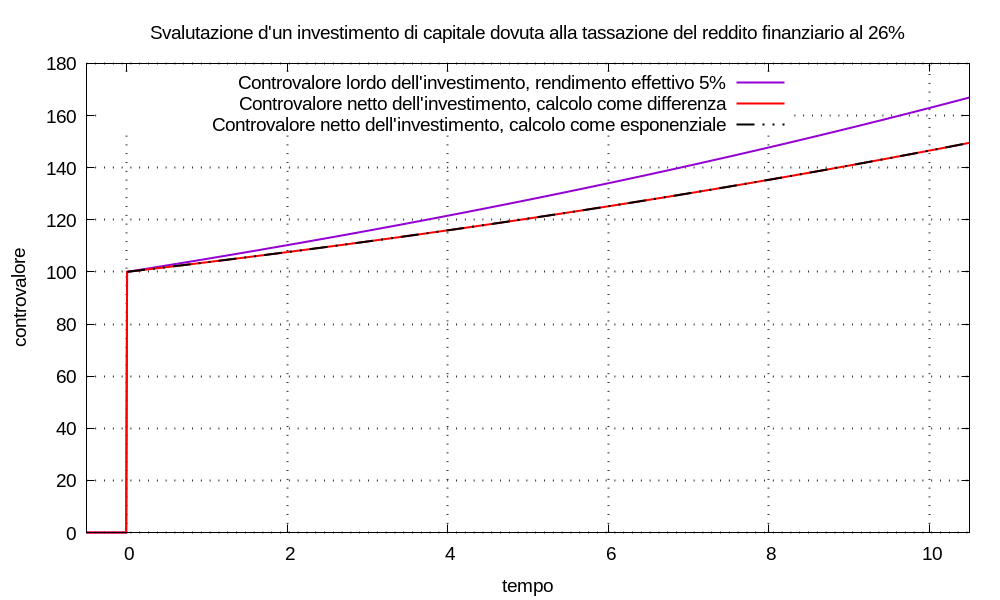
In elettrotecnica un ponte di misura è uno strumento di misura di cui è regolabile una grandezza caratteristica; applicato il ponte a un altro dispositivo, il misurando, oggetto del processo di misura, si regola la grandezza fino a che il ponte e il misurando sono in equilibrio tra loro; in questa condizione il valore della grandezza caratteristica del ponte permette il calcolo del valore d’una grandezza caratteristica del misurando.
------------
| |<--------------
| | | uscite titolo =
| | | entrate multimetro
| | |
| | --------------------
| multimetro | | titolo finanziario |
| | --------------------
| | ^
| | | entrate titolo =
| | | uscite multimetro
| |---------------
------------
|
| costi, commissioni e tasse
v
--------------
| dissipazione |
--------------
Nel nostro contesto: è possibile utilizzare il multimetro finanziario come “ponte di misura” nei confronti di qualsiasi titolo finanziario misurando di cui sia nota la movimentazione finanziaria.
Consideriamo un multimetro, con remunerazione non specificata, e definiamo l’ingresso:
M(t) = Cm δ(t - tm)
senza perdita di generalià poniamo tm = 0 e Cm = 1; sappiamo che la risposta risulta:
U(t) = Cm u(t - tm) esp[λ (t - tm)] = u(t) esp(λ t)
ora definiamo l’ingresso:
N(t) = Cm δ(t - tm) + Σk Ck δ(t - tk) = δ(t) + Σk Ck δ(t - tk)
in cui la sommatoria è estesa all’indice k tra 0 e K; senza perdita di generalità scegliamo la numerazione degl’impulsi in modo che tk ≤ tk+1 e quindi: t0 sia l’istante maggiormente proiettato verso il passato (cioè il primo a sinistra); tK sia l’istante maggiormente proiettato verso il futuro (cioè l’ultimo a destra).
Ammettiamo che sia sempre possibile scegliere una scala per gl’istanti tk, sul calendario finanziario, tale che tutti gl’impulsi accadano dopo tm, cioè tm < t0.
Sappiamo che la risposta del multimetro risulta:
V(t) = u(t) esp(λ t) + Σk Ck u(t - tk) esp[λ (t - tk)] = U(t) + Σk Ck u(t - tk) esp[λ (t - tk)]
La figura qui sotto mostra le risposte: U(t) al singolo impulso unitario; V(t) in cui al singolo impulso unitario è aggiunta una movimentazione variegata d’impulsi, per differenti valori della remunerazione λ.
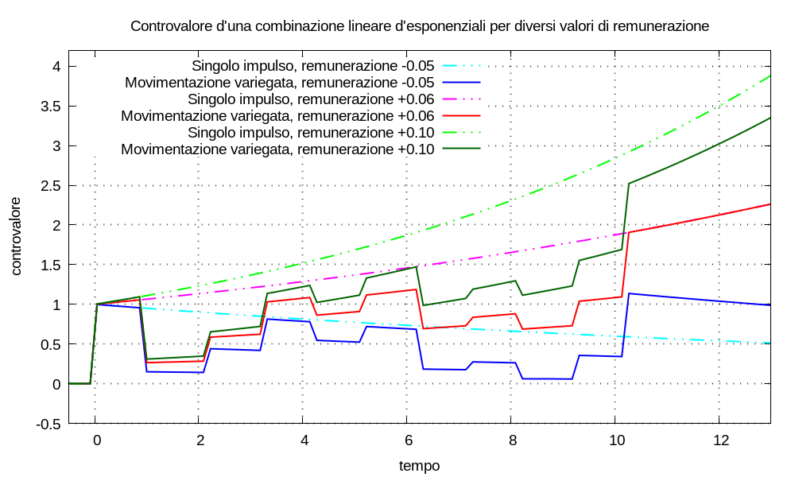
Dalla figura sembra esistere un valore di λ tale U(t) = V(t) per valori di tempo t ≥ tK; cioè sembra possibile applicare a un multimetro un ingresso del tipo N(t) e poi regolare λ fino a ottenere quella condizione. Con l’arbitrarietà di chi fa ciò che gli pare: definiamo configurazione d’equilibrio tra i due dispositivi quel valore di remunerazione e la conseguente relazione tra le risposte; indichiamo la remunerazione d’equilibrio con λequ.
Può essere utile riformulare la condizione d’equilibrio con le seguenti parole: per valori del tempo t ≥ tk i due ingressi M(t) e N(t) sono equivalenti, in quanto generano risposte uguali.
Ora dimostriamo se la condizione d’equilibrio esiste sempre, oppure no, e come si calcola la corrispondente remunerazione.
Ricordiamo che la risposta del multimetro al singolo impulso unitario risulta:
U(t) = u(t) esp(λ t)
e riconsideriamo il controvalore:
V(t) = U(t) + Σk Ck u(t - tk) esp[λ (t - tk)]
attualizziamo tutti gl’impulsi d’entità Ck all’istante tK:
V(t) = U(t) + u(t - tK) esp[λ (t - tK)] Σk Ck esp[λ (tK - tk)]
all’istante t = 0 risulta V(0) = 1 = U(0), all’istante t = tK tutti i gradini di Heaviside sono pari a uno e risulta:
V(tK) = esp(λ tK) + esp[λ (tK - tK)] Σk Ck esp[λ (tK - tk)]
⇒ V(tK) = esp(λ tK) + Σk Ck esp[λ (tK - tk)]
⇒ V(tK) = esp(λ tK) + esp(λ tK) Σk Ck esp(- λ tk)
⇒ V(tK) = esp(λ tK) [1 + Σk Ck esp(- λ tk)]
la condizione d’equilibrio s’ottiene se risulta V(tK) = U(tK) = esp(λ tK) cioè:
esp(λ tK) = esp(λ tK) [1 + Σk Ck esp(- λ tk)]
⇒ 1 = 1 + Σk Ck esp(- λ tk)
⇒ 0 = Σk Ck esp(- λ tk)
Osserviamo che è possibile il cambiamento di variabile tk = τk - T (τ è lettera greca tau) che ci permette di cambiare l’origine dei tempi:
⇒ 0 = Σk Ck esp[- λ (τk - T)] = Σk Ck esp(- λ τk) esp(λ T)
⇒ 0 = Σk Ck esp(- λ τk)
tra le infinite scelte possibili quella piú conveniente è, probabilmente, porre τ0 = 0.
Osservazione Nel caso in cui τk = k risulta:
0 = Σk Ck esp(- λ k) = Σk Ck esp(λ)-k = Σk Ck (1 + J)-k = Σk Ck ÷ (1 + J)k
Non conosco teoremi che dimostrino l’esistenza della soluzione, cioè d’un valore λ che annulli l’espressione; in ogni caso si possono usare algoritmi numerici iterativi per cercare gli zeri; in modo equivalente a ciò che si farebbe ruotando la manopola del multimetro di qua e di là, fino a trovare l’equilibrio (come quando si regola la temperatura dell’acqua per farsi lo shampoo: calda, fredda, calda… giusta!).
Come si forma la movimentazione di capitali per l’inserzione a ponte del multimetro?
N(t) = ... - 100 u(t - tk) + ...
N(t) = ... + 100 u(t - tk) + ...
N(t) = ... + 5 u(t - tk) + ...
N(t) = ... - 2 u(t - tk) + ...
Prelievi, versamenti, cedole e dividendi contribuiscono a determinare la condizione d’equilibrio al lordo di tasse e costi. Se s’aggiungono tasse e costi alla movimentazione: si determina la condizione d’equilibrio al netto di tasse e costi.
Se riusciamo a determinare la condizione d’equilibrio λequ: possiamo denominare il corrispondente rendimento effettivo ηequ = expm1(λequ) come tasso interno di rendimento (tir) della risposta V(t), lordo o netto a seconda della movimentazione considerata.
Usando l’inserzione a ponte ho calcolato i rendimenti effettivi di questo titolo a partire da venerdí 18 settembre 2026 fino al rimborso il 1 Settembre 2044, simulando un acquisto al prezzo di riferimento del giorno; non posso essere sicuro di non aver commesso errori di modellizzazione o calcolo. Il risultato è nella figura qui sotto.
La remunerazione al lordo delle tasse risulta λlordo ≈ 0,0470278 e il relativo rendimento effettivo al lordo delle tasse ηlordo ≈ 4,81512%, che si può considerare tasso interno di rendimento lordo.
La remunerazione al netto delle tasse risulta λnetto ≈ 0,0412119 e il relativo rendimento effettivo al netto delle tasse ηnetto ≈ 4,20729%, che si può considerare tasso interno di rendimento netto.
Sul sito di Borsa Italiana sono riportati i dati:
Rendimento effettivo a scadenza lordo 4,81 Rendimento effettivo a scadenza netto 4,2 Prezzo di riferimento 99,9
sia i rendimenti che il prezzo di riferimento sono da intendersi in percentuale rispetto al valore nominale d’un singolo titolo.
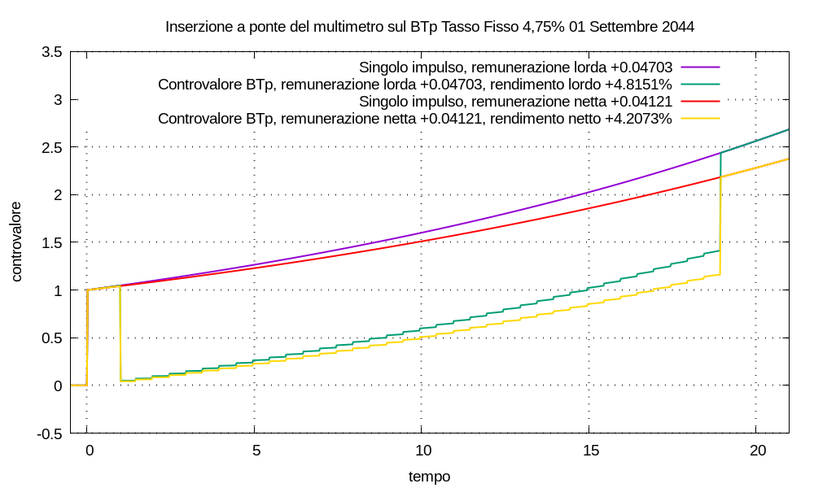
Seguono note sul calcolo.
U(t) = u(t) esp(λ t)
che a impulsi singoli unitari a cui è stata sommata la movimentazione per l’acquisto, detenzione e rimborso del titolo:
V(t) = U(t) + Σk Ck u(t - tk) esp[λ (t - tk)]
Ho fatto corrispondere il tempo t1 = 1 all’istante di inizio studio del titolo, cioè il 18 settembre 2026 alle ore 00:00, simulando un acquisto in quell’istante.
(0,0475 ÷ 2) × (1 - 17 ÷ (360 ÷ 2)) ≈ 0,0215069